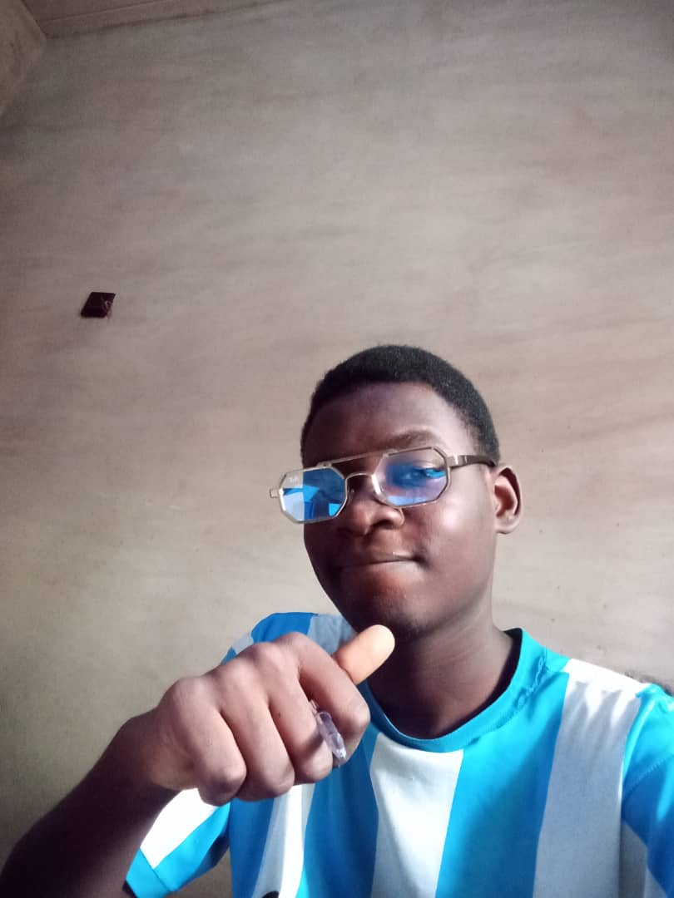

Bamidele Olusola | WDD 130

Hello! My name is Bamidele Olusola and I am from Osun state, Nigeria. I enjoy. I am a software development student currently pursuing my studies through BYU- Worldwide. As an aspiring software developer with a focused, analytical mindset, I thrive on tackling programming challenges and building engaging, logic-driven digital experiences.